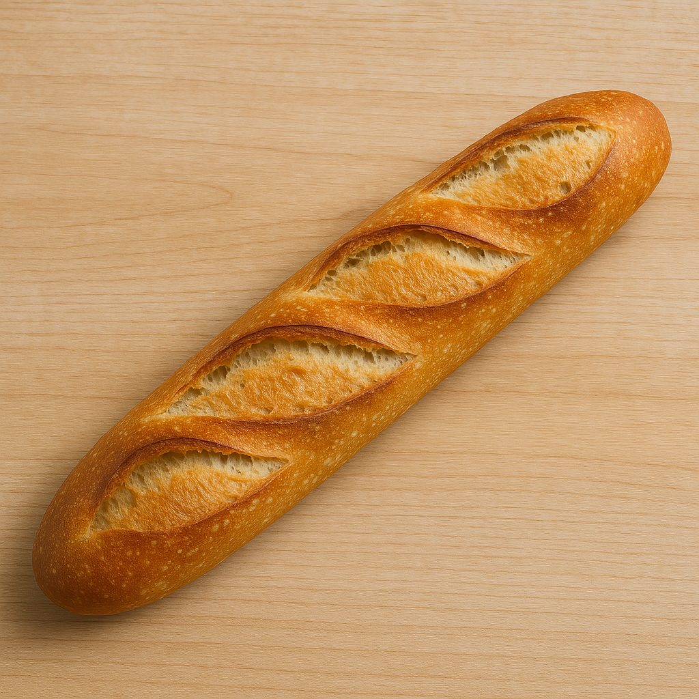

היסטורית הבגט
הבאגט הוא לחם צרפתי מסורתי שמקורו בצרפת, והוא נודע בצורתו הארוכה והצרה. ישנם מקורות שמצביעים על כך שהבאגט התפתח בסביבות המאה ה-19, בתקופת שלטונו של נפוליאון, שבו הוקם פטנט חדש עבור תנורי אפייה שהיו יכולים לאפות לחמים ארוכים ושטוחים במהירות. אחת התיאוריות טוענת שהצורה הייחודית של הבאגט נוצרה על מנת להקל על חיילי נפוליאון להחזיק את הלחם בבטן המדים. במהלך המאה ה-20, הבאגט הפך לסמל של תרבות האוכל הצרפתית, ונהפך לחלק בלתי נפרד מהמזון היומיומי בצרפת.
